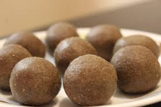
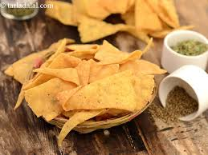
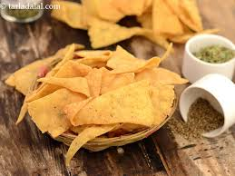

Green gram laddu

Green gram laddu recipe
Ingredients
- Green gram
- Badam
- Cardamom powder
- Jaggery syrup
- Water
- Ghee
Method to cook
- Take the green gram and roast them in pan.
- Grind the fried green gram.Cool it down.
- For jaggery syrup, boil the water and add jaggeryand cardamom powder.Wait till you get thick syrup.
- To the green gram mixture add few spoon of ghee,badam,and jaggery syrup.
- Mix the together.
- Make small size balls.
- Green gram laddu is ready!
Back to Home
other recipes

 
